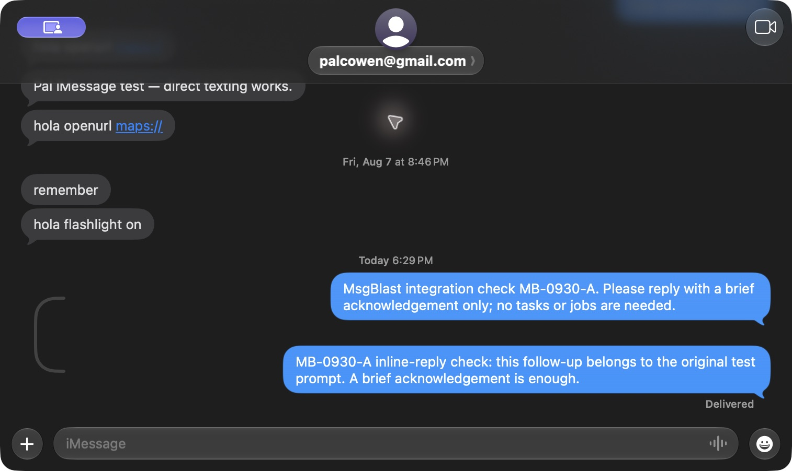
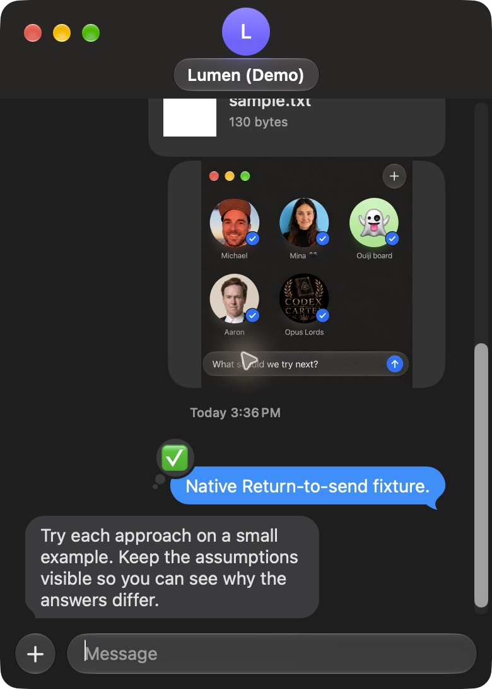

<!doctype html><html lang="en"><meta charset="utf-8"><meta name="viewport" content="width=device-width, initial-scale=1"><title>Messages and msgblast</title><style>body{font:15px system-ui;background:#191919;color:#eee;margin:24px}main{display:grid;grid-template-columns:1fr 1fr;gap:24px}figure{margin:0}img{width:100%;max-height:80vh;object-fit:contain;object-position:top;border-radius:18px;background:#242424}figcaption{margin:12px 0;color:#aaa}@media(max-width:800px){main{grid-template-columns:1fr}}</style><main><figure><figcaption>Messages · actual reference conversation</figcaption></figure><figure><figcaption>msgblast · final native editor build, simulated Demo conversation. The picture inside the message is a generated mockup used as the photo fixture.</figcaption></figure></main></html>